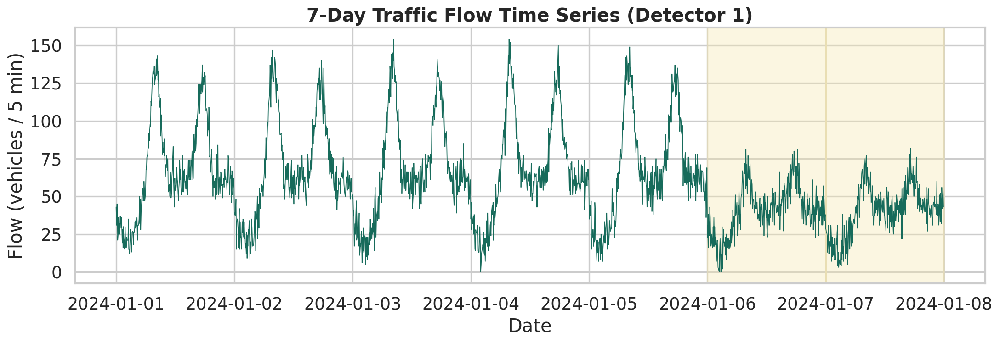
7 天流量时间序列
展示一周内流量的日周期波动，工作日高峰明显，周末流量较低。
Model Results
这一页展示时序分析的典型结果：描述性分析、平稳性检验、ARIMA/LSTM 预测和 DTW 模式聚类。
01
先观察流量数据的基本形态：时间趋势、日周期、工作日与周末差异，为后续建模提供直觉。

展示一周内流量的日周期波动，工作日高峰明显，周末流量较低。
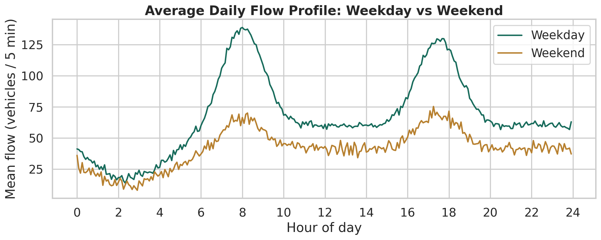
日均流量曲线对比，工作日呈现早高峰和晚高峰双峰，周末流量平缓。
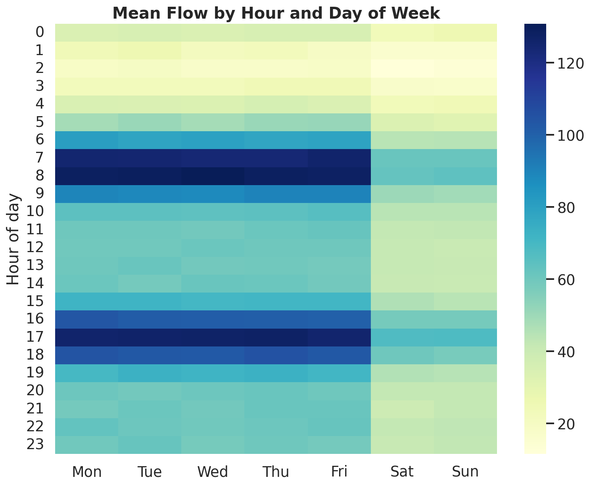
小时 × 日期的热力图，直观展示每日高峰时段和周末模式差异。
02
ARIMA 建模前需检验序列平稳性。ACF/PACF 帮助识别模型阶数，ADF 检验判断是否需要差分。
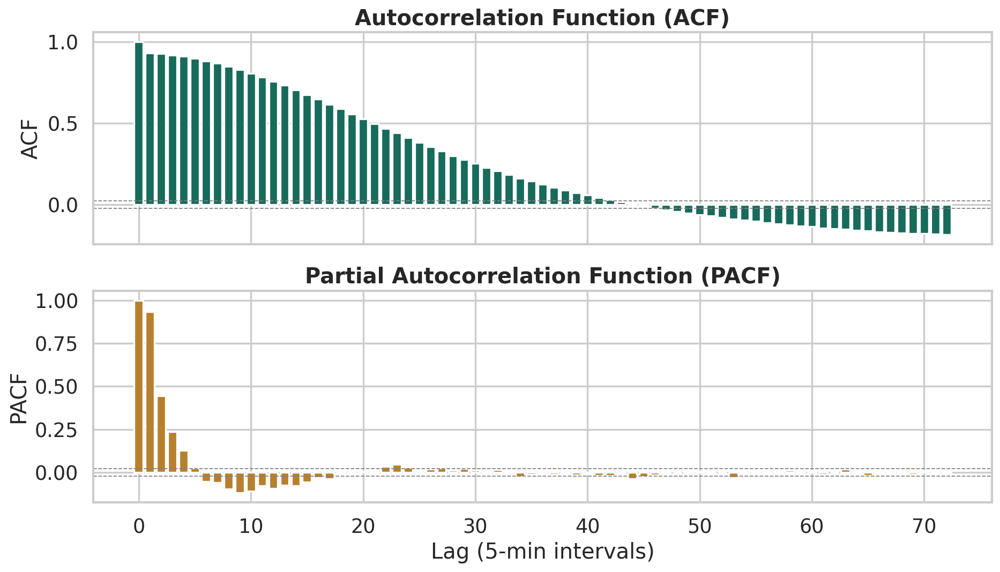
自相关和偏自相关图帮助识别 AR 和 MA 的阶数，周期性衰减提示日周期。
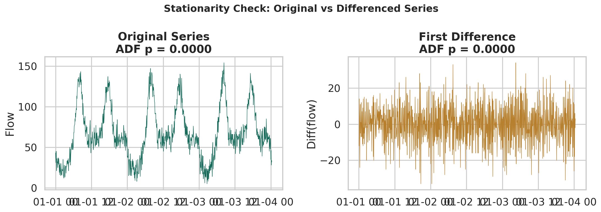
原始序列可能非平稳，一阶差分后通过 ADF 检验，支持使用 ARIMA(p,d,q) 中 d=1。
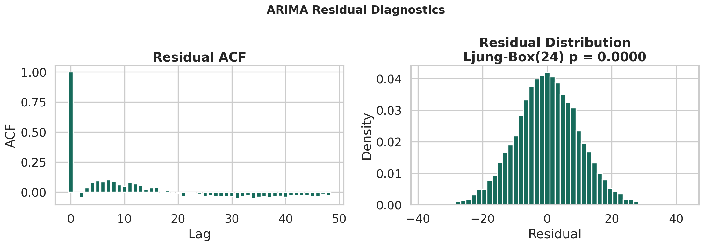
残差 ACF 和分布检验模型是否充分提取了信息。Ljung-Box 检验判断残差是否仍有自相关。
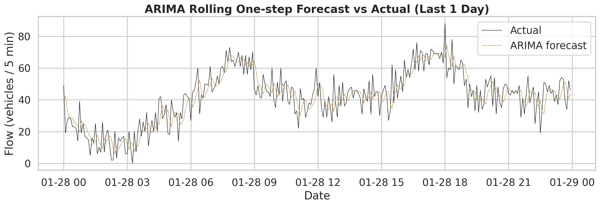
滚动一步预测 vs 实际值，评估 ARIMA 的短期预测能力。
原始序列 ADF 统计量 = -10.95，p < 0.001，已拒绝非平稳假设。差分后统计量 = -19.12，进一步确认平稳。本例中 d=1 适合，但 d=0 也可能可行——这是教学中值得讨论的点。
Ljung-Box 统计量 = 429.3，p < 0.001，残差仍存在显著自相关。说明 ARIMA(1,1,1) 未能完全捕捉序列的周期性，教学中可引导学生考虑 SARIMA 或引入外部变量。
| 检验 | 统计量 | p 值 | 结论 |
|---|---|---|---|
| ADF（原始序列） | -10.95 | <0.001 | 原始序列已平稳 |
| ADF（一阶差分） | -19.12 | <0.001 | 差分后更平稳 |
| Ljung-Box(24) | 429.30 | <0.001 | 残差仍有自相关 |
03
LSTM 利用滑动窗口捕捉序列的长期依赖，梯度提升树利用历史特征进行预测。三个模型由简到繁比较。
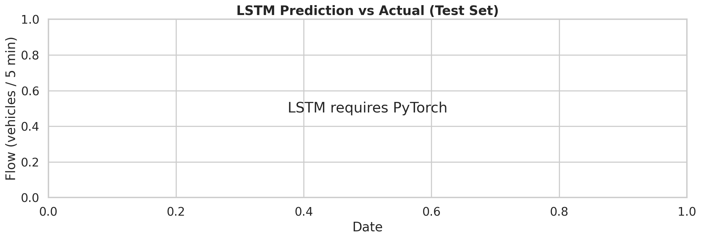
LSTM 利用过去 1 小时的滑动窗口预测下一时刻流量。
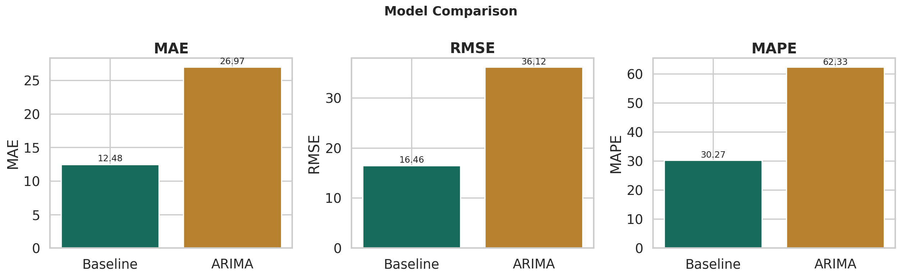
Baseline（历史同时段均值）、ARIMA、LSTM 三个模型的误差对比。
| 模型 | MAE | RMSE | MAPE (%) |
|---|---|---|---|
| Baseline（历史均值） | 12.48 | 16.46 | 30.27 |
| ARIMA(1,1,1) | 26.97 | 36.12 | 62.33 |
| LSTM | — | — | — |
04
不同时段的预测难度不同：早高峰和晚高峰波动大、误差高，平峰和夜间误差低。
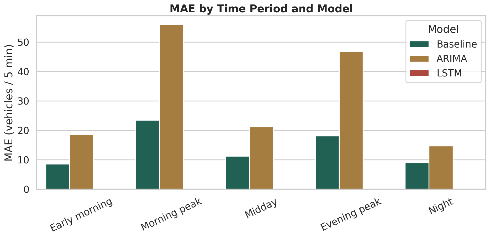
按早高峰、平峰、晚高峰、夜间分组，比较各模型的 MAE。
| 时段 | 模型 | MAE | RMSE | MAPE (%) |
|---|---|---|---|---|
| Early morning | Baseline | 8.55 | 11.04 | 47.74 |
| Early morning | ARIMA | 18.65 | 22.46 | 126.30 |
| Morning peak | Baseline | 23.47 | 27.75 | 30.98 |
| Morning peak | ARIMA | 56.12 | 64.67 | 51.12 |
| Midday | Baseline | 11.24 | 14.00 | 21.22 |
| Midday | ARIMA | 21.26 | 26.98 | 30.86 |
| Evening peak | Baseline | 18.12 | 21.92 | 24.78 |
| Evening peak | ARIMA | 46.90 | 54.70 | 47.60 |
| Night | Baseline | 9.05 | 11.43 | 19.32 |
| Night | ARIMA | 14.73 | 17.03 | 25.66 |
05
DTW 距离衡量不同检测器日流量曲线的形态相似性，将运行模式相近的检测器归为一组。
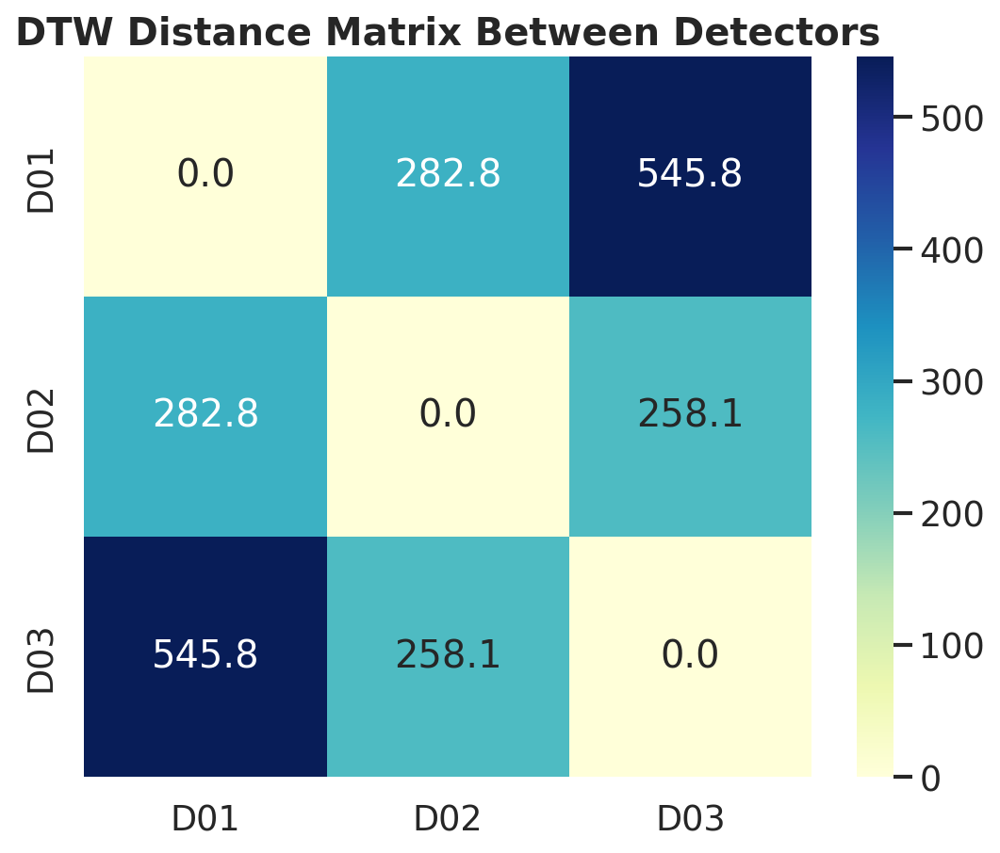
检测器之间的 DTW 距离热力图，距离越近表示日模式越相似。
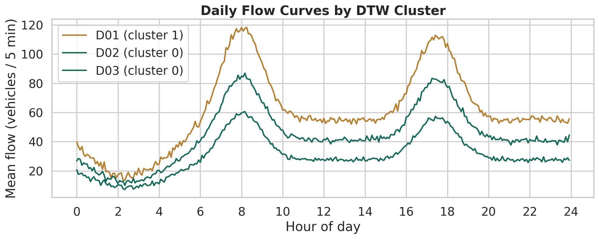
按 DTW 聚类分组的日均流量曲线，同一聚类的检测器具有相似的时间模式。
06